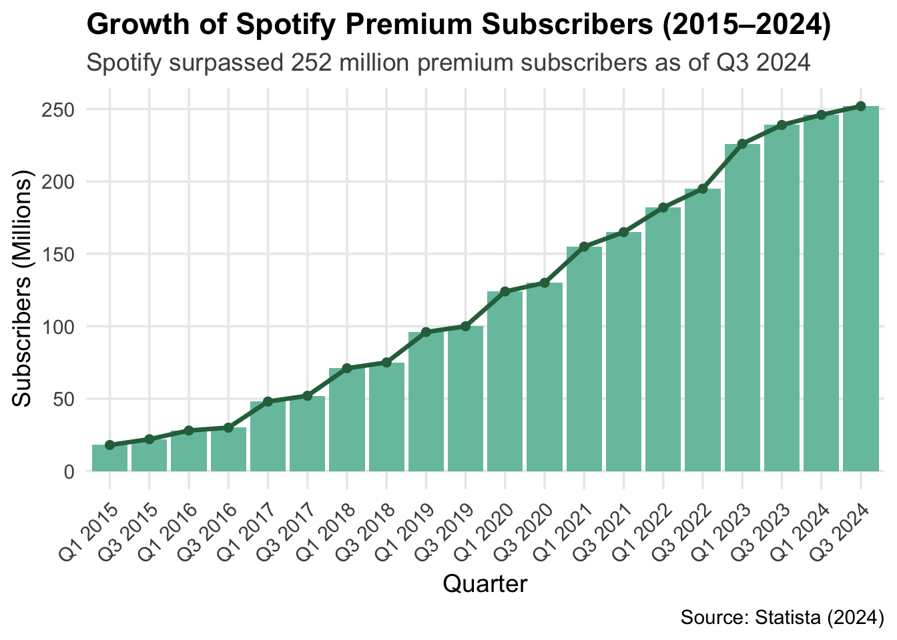
1. Introduction
1.1 Background
Spotify has become the global leader in music streaming, with over 252 million premium subscribers as of Q3 2024 (Statista, 2024).
While subscription metrics reveal growth, understanding user satisfaction and retention requires deeper analysis beyond numerical figures. User-generated content (UGC), especially app store reviews, provides rich insights into customer experiences. These reviews reflect not only product satisfaction but also user frustrations and unmet expectations. Platforms like Spotify occasionally respond to user reviews, but the dynamics of which reviews receive replies remain largely unexplored.
From a business strategy perspective, responding to user feedback can enhance loyalty, mitigate churn risks, and signal active customer engagement. From a policy perspective, increasing attention is being paid to platform transparency, consumer protection, and fairness in digital services (OECD, 2022).
Understanding how Spotify engages with user feedback through public responses has important implications for platform governance, user retention strategies, and broader digital platform accountability.
1.2 Literature Review
Literature supports that text analysis informs consumer insights. Pang & Lee (2008), Liu (2012) made the foundation of sentiment analysis for understanding customer satisfaction. Tirunillai & Tellis (2012) showed that user-generated content predicts business performance, while Blei et al. (2003) introduced LDA topic modeling to identify consumer concerns. In digital media, Datta et al. (2018) found that users’ sentiments correlate with music subscriber growth, and Piskorski et al. (2019) demonstrated that negative sentiment spikes signal churn risk. These findings help to support the analysis of user sentiment in Spotify’s reviews and help to make market decisions.
1.3 Research Questions & Hypotheses
This project is guided by the following research questions and associated hypotheses:
RQ1: How do Spotify users describe their experience in written reviews?
H1: A majority of user reviews focus on app functionality, usability, and technical performance rather than music content.
RQ2: Which review topics or tones are more likely to receive an official reply—and what does this reveal about platform priorities or transparency?
H2: Reviews expressing dissatisfaction, especially those highlighting technical issues or account problems, are more likely to receive a reply than general positive feedback.
1.4 Methodology Overview
This project combines manual annotation, supervised machine learning, unsupervised topic modeling, sentiment analysis, and logistic regression to investigate the content and platform engagement patterns of over 61,000 Spotify app user reviews. The primary goal is to classify user feedback into categories and evaluate how different review characteristics correlate with the likelihood of receiving an official platform reply.
The analysis is structured in three major phases:
Classification of User Reviews
A subset (~2000) of reviews was manually annotated into App Experience (e.g., technical issues, UX features) and Other categories (e.g., music content, ad & pricing, public opinion on Spotify company, general feedback). Using this labeled set, I trained multiple text classification models (Naïve Bayes, SVM, Lasso) based on TF-IDF features. I also tested if word embedding using pre-trained GloVe vectors would improve the Lasso model. The final model—Lasso with TF-IDF—was selected for its high accuracy (83%) and interpretability. This model was applied to classify all reviews in the dataset.Topic Modeling on App Experience
To explore subthemes within App Experience reviews, I applied Latent Dirichlet Allocation (LDA). Six distinct topics were identified, including Technical Fixes, Account & Subscription Issues, Playback Problems, and Positive Feedback. These topic labels were merged back into the main dataset for further analysis. The Other category for the rest observations was also labeled as Other for this variable.Platform Reply Analysis
Only 0.35% of user reviews received an official reply from Spotify. To explore patterns in reply behavior, I:- Conducted emotion scoring using the NRC lexicon
- Constructed logistic regression models to predict replies based on emotional tone, review length, topic labels, and competitor mentions
This approach allows for both categorization and insights into platform responsiveness, user frustration, and policy-relevant themes like fairness, transparency, and user protection.
🔧 Data Wrangling Steps
To prepare the dataset for analysis, I implemented the following structured data cleaning and transformation pipeline:
- Text Cleaning: Converted all review text to lowercase, removed duplicates, and eliminated special characters to ensure consistency for text-based analysis.
- Tokenization & Lexicon Matching: Tokenized review text and joined with the NRC lexicon to generate review-level emotion scores across ten emotion categories.
- Manual Annotation: Labeled a 2,000-review sample into high-level categories (e.g., App Experience vs. Other) to enable supervised learning.
- Feature Engineering:
- Created binary flags for official reply status and competitor mentions (e.g., detecting “apple music”).
- Computed review-level features including word count and presence of competitor names using regex patterns.
- Text Classification: Built TF-IDF and word embedding matrices to classify reviews into predicted topic labels using machine learning models.
- Topic Modeling Preparation: Filtered and pre-processed App Experience reviews for use in unsupervised LDA modeling.
- SMOTE Balancing: Addressed reply class imbalance by generating synthetic samples for the minority class (Replied = 1) to support robust logistic regression modeling.
- Reshaping for Visualization: Transformed wide-format data (emotion scores, topic labels, etc.) into long-format using
pivot_longerto enable flexible plotting and faceted visualizations.
1.5 Variable of Interest
The full dataset (newreview) includes the following variables:
Review: The review text
Rating: Star rating (1 to 5)
Predicted_Label: Binary classification output (App Experience vs. Other)
Sentiment: Derived from star rating (Negative, Neutral, Positive)
Replied: Binary indicator for whether Spotify replied
PredictedLabel_LDA: Topic label from LDA modeling
Emotion Scores (from NRC Lexicon): anticipation, joy, positive, sadness, trust, anger, fear, negative, surprise, disgust
word_count: Total number of words in the review
competitor_mention: Binary indicator for whether a competing platform was mentioned
2. Data & Annotation
2.1 Data Loading and Cleaning
The primary dataset used in this analysis consists of 61,594 user reviews of the Spotify mobile application, scraped from the Google Play Store and published on Kaggle (2022). Each observation includes:
Time_submitted: the timestamp of when the review was posted,
Review: the full text of the user’s review,
Rating: a numeric star rating from 1 (lowest) to 5 (highest),
Total_thumbsup: the number of other users who marked the review as helpful,
Reply: the official response from Spotify, if any.
Initial inspection confirmed the dataset is clean and complete, with no missing values in any of the five key fields. Reviews were filtered to remove empty entries and were subsequently preprocessed to standardize formatting. Preprocessing steps included expanding contractions (e.g., “isn’t” → “is not”), removing special characters, converting numbers to words, and ensuring consistent encoding. This prepared the data for downstream natural language processing tasks such as classification and sentiment analysis.
Show Code
review <- read.csv("data/reviews.csv")
review <- review %>%
mutate(Review = Review %>%
replace_contraction() %>%
replace_word_elongation() %>%
replace_symbol() %>%
replace_number() %>%
replace_non_ascii()) %>%
drop_na(Review) %>%
filter(Review != "")
write.csv(review, "data/processed_reviews.csv", row.names = FALSE)Show Code
review <- read.csv("data/processed_reviews.csv")2.2 Human Annotation
Using a manually labeled random sample of 2,000 reviews, I initially created four function-based categories according to the major themes mentioned in reviews:
- Technical Issues: problems with the functionality or stability of the app.
- UX and Features: user experience, layout, and feature-related feedback.
- Price and Ads: complaints about subscriptions, pricing, or ad interruptions.
- Other: general impressions or unrelated comments.
However, due to the overlapping nature of many reviews and difficulty distinguishing between certain categories (e.g., Technical vs. UX_Feature), I consolidated these labels into a binary classification scheme to improve annotation consistency and model performance:
- App Experience: includes reviews related to technical issues, user interface, and features (“Technical Issues” plus “UX and Features”).
- Other: includes vague or general sentiment not tied to specific app functionalities (“Price and Ads” and “Other”).
This consolidation allows the classifier to focus on identifying whether a review pertains to actionable app experience issues. Reviews referencing music content (e.g., “variety of songs”) or expressing general satisfaction were generally categorized under Other unless they contained explicit comments about app use.
Show Code
checked <- read_excel("data/human_label_checked.xlsx")
checked$NewLabel[checked$NewLabel %in% c("Technical", "UX_Feature")] <- "App Experience"
checked$NewLabel[!checked$NewLabel %in% c("App Experience")] <- "Other"
checked$NewLabel <- factor(checked$NewLabel)3. Classification
3.1 TF-IDF Feature Matrix and Split
To prepare the dataset for supervised machine learning models, I initially considered manually constructing three distinct subsets, including a validation set, to enable separate evaluation across multiple methods. While this approach would have ensured independent validation for each model, it would have significantly reduced the available training data, potentially weakening model performance due to limited sample size.
Recognizing this trade-off, I adopted an alternative strategy to maximize data utilization. Specifically, I performed a random 80:20 split of the full labeled dataset into training and test sets. To further improve model robustness and generalizability, cross-validation techniques were applied within the training set during model tuning:
Naïve Bayes: Evaluated using 5-fold cross-validation.
Support Vector Machine (SVM): Hyperparameter tuning via cross-validation.
Lasso (Logistic Regression with L1 Penalty): Utilized built-in cross-validation available through the cv.glmnet() function.
Following the split, text preprocessing was conducted separately for the training and test sets. Tokenization was applied with the removal of punctuation, numbers, and symbols, followed by stemming and stopword removal. A term-frequency inverse-document-frequency (TF-IDF) weighting scheme was then used to construct the feature matrices, ensuring that both sets were aligned on the same vocabulary.
Show Code
train_index <- createDataPartition(checked$ID, p = 0.8, list = FALSE)
trainSet <- checked[train_index, ]
testSet <- checked[-train_index, ]
train_dfm <- tokens(trainSet$Review, remove_punct = TRUE, remove_numbers = TRUE, remove_symbols = TRUE) %>%
dfm() %>%
dfm_wordstem() %>%
dfm_remove(stopwords("en")) %>%
dfm_trim(min_docfreq = 0.001, max_docfreq = 0.999, docfreq_type = "prop")
test_dfm <- tokens(testSet$Review, remove_punct = TRUE, remove_numbers = TRUE, remove_symbols = TRUE) %>%
dfm() %>%
dfm_wordstem() %>%
dfm_remove(stopwords("en")) %>%
dfm_match(features = featnames(train_dfm))
train_tfidf <- dfm_tfidf(train_dfm)
test_tfidf <- dfm_tfidf(test_dfm)
train_matrix <- as.matrix(train_tfidf)
test_matrix <- as.matrix(test_tfidf)
testSet$NewLabel <- factor(testSet$NewLabel, levels = c("App Experience", "Other"))3.2 Supervised Machine Learning
After constructing the TF-IDF feature matrices, three supervised machine learning models were trained to classify Spotify user reviews: Naïve Bayes, SVM, and Lasso. For reproducibility and potential future applications, all trained models and associated feature sets were saved to disk. Detailed modeling procedures and results are described below.
3.2.1 Naïve Bayes with Cross-Validation
The Naïve Bayes classifier was initially evaluated using both raw document-feature matrices (DFM) and TF-IDF weighted matrices. Empirical testing showed that the TF-IDF transformation consistently improved model performance, and thus it was adopted for all modeling.
A 5-fold cross-validation strategy was employed to estimate model performance during training. In each fold, the training set was further split into a smaller training subset and a validation subset, and model accuracy was recorded. The final model was then retrained on the full training set and evaluated on the held-out test set.
Show Code
set.seed(2025323)
folds <- createFolds(trainSet$NewLabel, k = 5, list = TRUE)
docnames(train_tfidf) <- trainSet$ID
cv_results <- lapply(folds, function(test_indices) {
validation_cv <- trainSet[test_indices, ]
train_cv <- trainSet[-test_indices, ]
train_cv_dfm <- dfm_subset(train_tfidf, docnames(train_tfidf) %in% train_cv$ID)
validation_cv_dfm <- dfm_subset(train_tfidf, docnames(train_tfidf) %in% validation_cv$ID)
validation_cv_dfm <- dfm_match(validation_cv_dfm, features = featnames(train_cv_dfm))
nb_model_cv <- textmodel_nb(train_cv_dfm, train_cv$NewLabel, smooth = 1, prior = "docfreq")
predicted_cv <- predict(nb_model_cv, newdata = validation_cv_dfm)
predicted_cv <- factor(predicted_cv, levels = c("App Experience", "Other"))
validation_cv$NewLabel <- factor(validation_cv$NewLabel, levels = c("App Experience", "Other"))
if (length(unique(validation_cv$NewLabel)) < 2) return(NA)
cv_cmat <- confusionMatrix(table(predicted_cv, validation_cv$NewLabel))
return(cv_cmat$overall["Accuracy"])
})
cv_results <- na.omit(unlist(cv_results))
mean_cv_accuracy <- mean(cv_results, na.rm = TRUE)
cat("Mean 5-Fold CV Accuracy:", round(mean_cv_accuracy, 3), "\n")
nb_model <- textmodel_nb(train_tfidf, trainSet$NewLabel, smooth = 1, prior = "docfreq")
saveRDS(nb_model, "model/nb_model.rds")
predicted_test_nb <- predict(nb_model, newdata = test_tfidf)
predicted_test_nb <- factor(predicted_test_nb, levels = c("App Experience", "Other"))
test_cmat_nb <- confusionMatrix(predicted_test_nb, testSet$NewLabel)
print(test_cmat_nb)3.2.2 SVM Model
A linear kernel SVM model was trained on the TF-IDF matrix. To optimize model performance, hyperparameter tuning was performed on the cost parameter (C) using 5-fold cross-validation. Although minor scaling warnings were encountered due to sparsity in the TF-IDF matrix, careful feature trimming was conducted to minimize these issues without significantly altering the vocabulary set.
Show Code
set.seed(2025323)
svm_tuned <- tune(
svm,
train.x = train_matrix,
train.y = as.factor(trainSet$NewLabel),
kernel = "linear",
ranges = list(cost = c(0.1, 1, 10)),
tunecontrol = tune.control(cross = 5)
)
svm_model <- svm_tuned$best.model
predicted_test_svm <- predict(svm_model, newdata = test_matrix)
predicted_test_svm <- factor(predicted_test_svm, levels = c("App Experience", "Other"))
test_cmat_svm <- confusionMatrix(predicted_test_svm, testSet$NewLabel)
print(test_cmat_svm)
saveRDS(svm_model, "model/svm_model.rds")3.2.3 Lasso Model
A Lasso logistic regression model was fitted to the TF-IDF matrix using cv.glmnet(), which automatically performs internal cross-validation to select the optimal regularization parameter (lambda). A binomial family was specified to handle the binary classification task.
Show Code
set.seed(2025323)
lasso_model <- cv.glmnet(
x = as.matrix(train_tfidf),
y = trainSet$NewLabel,
family = "binomial",
alpha = 1,
nfolds = 5,
type.measure = "class",
lambda.min.ratio = 1e-3,
maxit = 50000
)
plot(lasso_model)
print(lasso_model)
predicted_test_lasso <- predict(lasso_model, newx = test_matrix, s = "lambda.min", type = "class")
predicted_test_lasso <- factor(predicted_test_lasso, levels = c("App Experience", "Other"))
test_cmat_lasso <- confusionMatrix(predicted_test_lasso, testSet$NewLabel)
print(test_cmat_lasso)
saveRDS(lasso_model, "model/lasso_model.rds")3.2.4 Comparison of Models
To ensure consistency and efficiency, the trained models were saved and reloaded for performance comparison without needing to re-run the full training pipelines. The saved models were applied to the held-out test set, ensuring that feature alignment was maintained between training and testing phases.
Show Code
cat("Naïve Bayes Test Set Accuracy:", round(test_cmat_nb$overall["Accuracy"], 3), "\n")
cat("SVM Test Accuracy:", round(test_cmat_svm$overall["Accuracy"], 3), "\n")
cat("Lasso Test Set Accuracy:", round(test_cmat_lasso$overall["Accuracy"], 3), "\n")Based on previously recorded results:
- Naïve Bayes Test Set Accuracy: 0.785
- SVM Test Set Accuracy: 0.785
- Lasso Test Set Accuracy: 0.83
Lasso outperformed the other two models and demonstrated the highest accuracy in classifying Spotify reviews into App Experience and Other categories. It was followed by SVM and Naïve Bayes, which performed similarly.
3.2.5 Embedding-based Classification
To further explore performance improvements, an embedding-based classification approach was implemented. Each review was represented as the average of its constituent word embeddings, using pre-trained 300-dimensional GloVe vectors. The resulting document embeddings were then used to train a Lasso logistic regression model.
Show Code
# === Load Pretrained Embeddings ===
glove_path <- "data/glove.6B.300d.txt" # download from https://nlp.stanford.edu/projects/glove/
glove_wts <- data.table::fread(glove_path, quote = "", data.table = FALSE) %>% as_tibble()
glove_matrix <- as.matrix(glove_wts[,-1])
rownames(glove_matrix) <- glove_wts$V1
# === Create Document Embeddings ===
dfm_embed <- tokens(checked$Review,
remove_punct = TRUE,
remove_numbers = TRUE,
remove_symbols = TRUE) %>%
dfm() %>%
dfm_remove(stopwords("en"))
w2v <- glove_matrix[rownames(glove_matrix) %in% featnames(dfm_embed), ]
embed <- matrix(NA, nrow = ndoc(dfm_embed), ncol = 300)
for (i in 1:ndoc(dfm_embed)) {
vec <- as.numeric(dfm_embed[i,])
doc_words <- featnames(dfm_embed)[vec > 0]
embed_vec <- w2v[rownames(w2v) %in% doc_words, ]
embed[i,] <- if (is.null(dim(embed_vec))) rep(NA, 300) else colMeans(embed_vec, na.rm = TRUE)
}
rows_with_na <- apply(embed, 1, function(row) any(is.na(row)))
embed_clean <- embed[!rows_with_na, ]
checked_clean <- checked[!rows_with_na, ]
set.seed(2025323)
train_index <- createDataPartition(checked_clean$NewLabel, p = 0.8, list = FALSE)
X_train_embed <- embed_clean[train_index, ]
X_test_embed <- embed_clean[-train_index, ]
y_train_embed <- checked_clean$NewLabel[train_index]
y_test_embed <- checked_clean$NewLabel[-train_index]
# === Train and Save Embedding Lasso Model ===
lasso_embed <- cv.glmnet(X_train_embed, y_train_embed,
family = "binomial", alpha = 1,
nfolds = 5, maxit = 50000)
preds_embed <- predict(lasso_embed, newx = X_test_embed, s = "lambda.min", type = "class")
preds_embed <- factor(preds_embed, levels = levels(y_test_embed))
confusionMatrix(preds_embed, y_test_embed)
saveRDS(lasso_embed, "model/final_embedding_lasso_model.rds")To systematically compare the TF-IDF-based and embedding-based models, evaluation metrics including accuracy, precision, recall, F1 score, and balanced accuracy were computed.
Show Code
compare_models <- function(model_name, preds, truth) {
cm <- confusionMatrix(preds, truth)
acc <- round(cm$overall["Accuracy"], 3)
kappa <- round(cm$overall["Kappa"], 3)
precision <- round(cm$byClass["Precision"], 3)
recall <- round(cm$byClass["Recall"], 3)
f1 <- round(2 * (precision * recall) / (precision + recall), 3)
bal_acc <- round(cm$byClass["Balanced Accuracy"], 3)
cat("==========", model_name, "==========\n")
cat("Accuracy:", acc, "\n")
cat("Kappa:", kappa, "\n")
cat("Precision:", precision, "\n")
cat("Recall:", recall, "\n")
cat("F1 Score:", f1, "\n")
cat("Balanced Accuracy:", bal_acc, "\n\n")
}
compare_models("TF-IDF Lasso", predicted_test_lasso, testSet$NewLabel)
compare_models("Word Embedding Lasso", preds_embed, y_test_embed)Although the embedding-based Lasso model demonstrated strong recall and comparable F1 performance, the TF-IDF-based Lasso achieved slightly higher overall accuracy and balanced accuracy. Given its interpretability and marginally superior performance, the TF-IDF Lasso was selected as the final classification model.
The following visualization summarizes model comparison results:
========== TF-IDF Lasso ==========
Accuracy: 0.83
Kappa: 0.648
Precision: 0.868
Recall: 0.846
F1 Score: 0.857
Balanced Accuracy: 0.826
========== Word Embedding Lasso ==========
Accuracy: 0.82
Kappa: 0.613
Precision: 0.837
Recall: 0.878
F1 Score: 0.857
Balanced Accuracy: 0.802Show Code
# Previously recorded accuracy
accuracy_results <- tibble(
Model = c("Naive Bayes", "SVM", "Lasso (TF-IDF)", "Lasso (Embedding)"),
Accuracy = c(0.785, 0.785, 0.83, 0.82)
)
ggplot(accuracy_results, aes(x = reorder(Model, Accuracy), y = Accuracy, fill = Model)) +
geom_col(width = 0.5, show.legend = FALSE) + # Narrower bars
geom_text(aes(label = sprintf("%.3f", Accuracy)), vjust = -0.8, size = 4.2, fontface = "bold") + # Bold and clear labels
scale_fill_brewer(palette = "Set2") + # Professional palette
ylim(0, 1) +
labs(
title = "Classification Accuracy Across Models",
x = NULL,
y = "Accuracy"
) +
theme_minimal(base_size = 12) +
theme(
plot.title = element_text(face = "bold", hjust = 0.5, size = 14),
axis.text.x = element_text(size = 11),
axis.text.y = element_text(size = 10)
)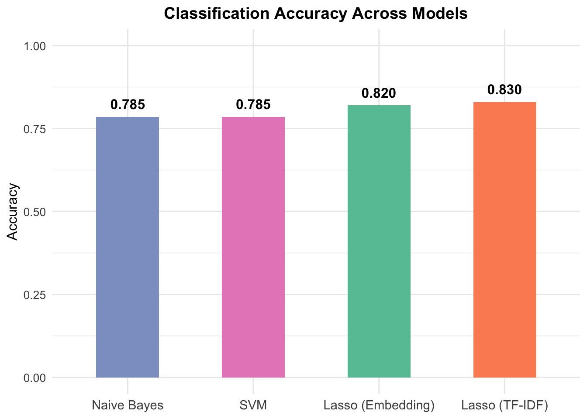
Given its stronger interpretability and slightly higher overall performance, TF-IDF Lasso was selected as the primary model for classifying Spotify reviews.
3.2.6 Applying Model to Full Dataset
Finally, the selected TF-IDF Lasso model was applied to the entire cleaned Spotify review dataset to predict categories for all available reviews.
Show Code
# === Preprocess Full Review Set ===
full_dfm <- tokens(review$Review,
remove_punct = TRUE,
remove_numbers = TRUE,
remove_symbols = TRUE) %>%
dfm() %>%
dfm_wordstem() %>%
dfm_remove(stopwords("en")) %>%
dfm_match(features = featnames(train_tfidf))
full_matrix <- as.matrix(dfm_tfidf(full_dfm))
# === Load Final TF-IDF Model and Predict ===
final_model <- readRDS("model/lasso_model.rds")
predictions_all <- predict(final_model, newx = full_matrix, s = "lambda.min", type = "class")
review$Predicted_Label <- predictions_all
head(review[, c("Review", "Predicted_Label")])
# write.csv(review, "data/predicted_reviews_tfidf_lasso.csv", row.names = FALSE)The resulting predictions provide categorical labels (App Experience or Other) for the entire corpus of user reviews, facilitating downstream sentiment analysis and topic-specific insights.
4. Topic Modeling for App Experience Reviews
4.1 Load Predicted Data and Label Sentiment and Reply
Using the star ratings assigned to each review, sentiment labels were created:
1–2 stars: Negative
3 stars: Neutral
4–5 stars: Positive
Among 60,915 reviews:
40% were labeled Negative
11% were labeled Neutral
49% were labeled Positive
Reply behavior was also examined. Only 0.35% of reviews received an official Spotify reply, indicating that responses are extremely rare.
Applying the TF-IDF Lasso classifier:
62% of reviews were classified as App Experience
38% were classified as Other
Most user feedback focused on functionality, usability, or performance-related aspects of the Spotify app.
Show Code
sentiment_dist <- newreview %>% count(Sentiment) %>% mutate(prop = n / sum(n))
reply_dist <- newreview %>% count(Replied) %>% mutate(prop = n / sum(n))
label_dist <- newreview %>% count(Predicted_Label) %>% mutate(prop = n / sum(n))
p1 <- ggplot(sentiment_dist, aes(x = Sentiment, y = prop, fill = Sentiment)) +
geom_col(show.legend = FALSE) +
scale_y_continuous(labels = scales::percent) +
labs(title = "Distribution of Sentiment", y = NULL, x = "Sentiment") +
scale_fill_brewer(palette = "Set2") +
theme_minimal(base_size = 11) +
theme(plot.title = element_text(size = 12))
p2 <- ggplot(reply_dist, aes(x = factor(Replied), y = prop, fill = factor(Replied))) +
geom_col(show.legend = FALSE) +
scale_y_continuous(labels = scales::percent) +
scale_x_discrete(labels = c("0" = "No Reply", "1" = "Replied")) +
labs(title = "Reviews with Reply", y = NULL, x = "Reply") +
scale_fill_brewer(palette = "Set2") +
theme_minimal(base_size = 11) +
theme(plot.title = element_text(size = 12))
p3 <- ggplot(label_dist, aes(x = Predicted_Label, y = prop, fill = Predicted_Label)) +
geom_col(show.legend = FALSE) +
scale_y_continuous(labels = scales::percent) +
labs(title = "Classification Results", y = NULL, x = "Predicted Label") +
scale_fill_brewer(palette = "Set2") +
theme_minimal(base_size = 11) +
theme(plot.title = element_text(size = 12))
# Combine into one row
p1 + p2 + p3 + plot_layout(ncol = 3)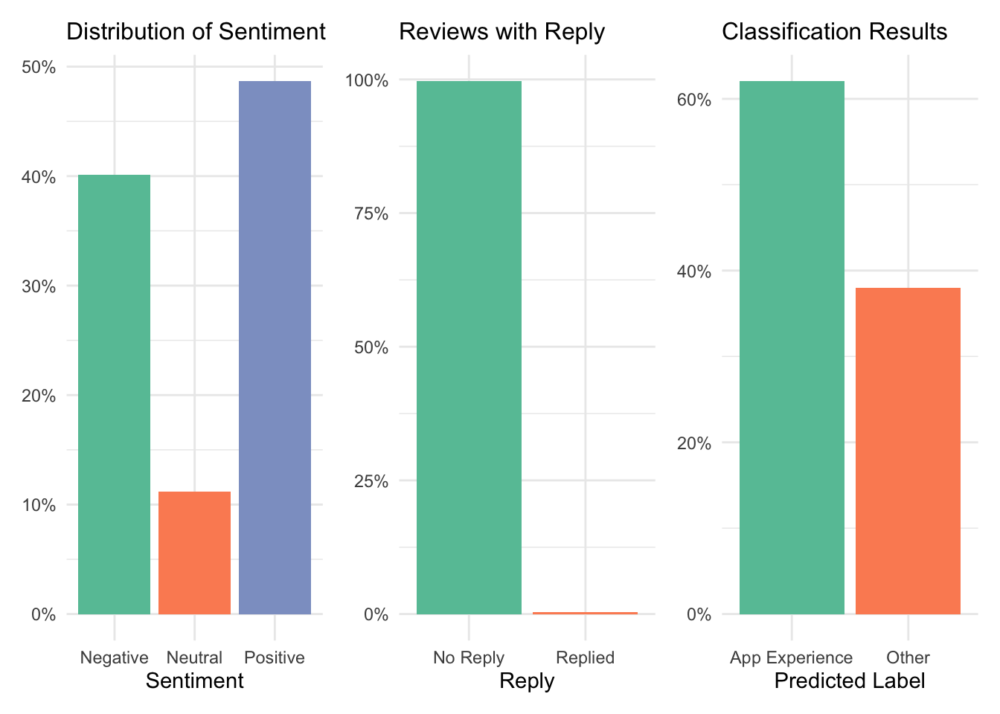
4.2 Duplicate Handling
Upon inspection, 270 duplicated review texts were identified, submitted by different users. Some identical reviews appeared with different star ratings, likely reflecting varying individual standards or accidental misratings.
Rather than removing these duplicates, they were retained to preserve the richness of user perspectives. This decision captures the subjective nature of user experiences and provides further insights into rating inconsistencies across the platform.
Show Code
review_variance <- newreview %>%
group_by(Review) %>%
summarise(Unique_Ratings = n_distinct(Rating), Count = n()) %>%
filter(Count > 1, Unique_Ratings > 1)
print(review_variance)A visualization illustrating rating variation for identical review texts is provided below:
Show Code
review_rating_variation <- newreview %>%
filter(Review %in% review_variance$Review)
ggplot(review_rating_variation, aes(x = Review, y = as.factor(Rating), color = as.factor(Rating))) +
geom_jitter(width = 0.3, height = 0.1, size = 2.2, alpha = 0.8) +
scale_color_brewer(palette = "Dark2") +
labs(
title = "Variation in Star Ratings for Identical Reviews",
subtitle = "Identical reviews submitted with different star ratings",
x = NULL,
y = "Star Rating",
color = "Rating"
) +
theme_minimal(base_size = 13) +
theme(
plot.title = element_text(hjust = 0.5, face = "bold"),
plot.subtitle = element_text(hjust = 0.5, size = 11),
axis.text.x = element_blank(),
axis.ticks.x = element_blank(),
panel.grid.major.x = element_blank(),
panel.grid.minor = element_blank()
)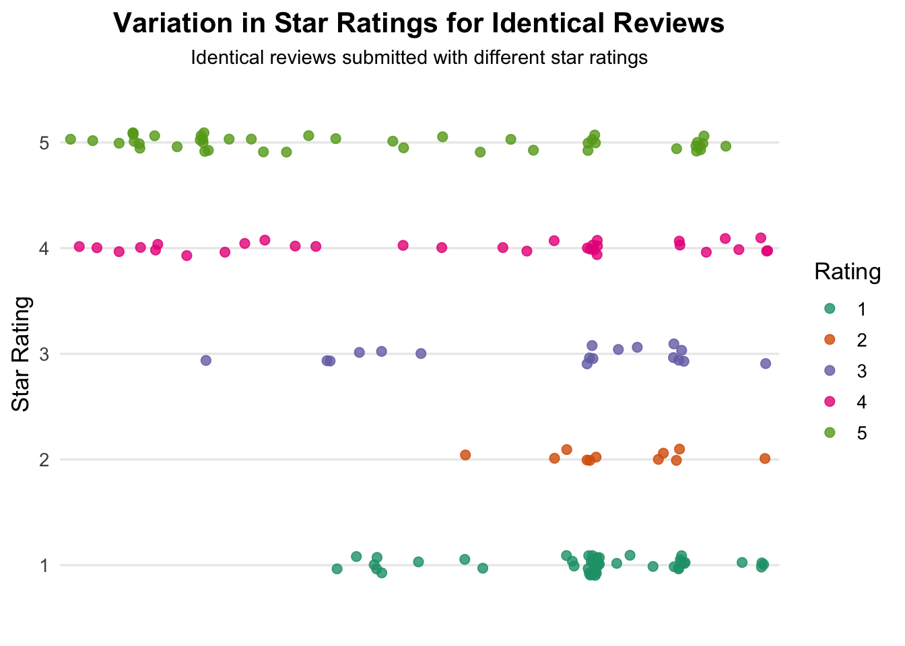
4.3 Sentiment and Reply Patterns by Category
This section examines the relationship between review sentiment, reply behavior, and the classification results. Specifically, we investigate how sentiment varies across categories and whether certain types of reviews are more likely to receive a response.
Cross-tabulations were performed to analyze sentiment distributions and reply behaviors across the App Experience and Other categories.
Show Code
# Cross-tabulate sentiment by predicted label
sentiment_cat_table <- table(newreview$Sentiment, newreview$Predicted_Label)
prop.table(sentiment_cat_table, margin = 2)
App Experience Other
Negative 0.50858579 0.22655709
Neutral 0.13697579 0.07076125
Positive 0.35443842 0.70268166Show Code
# Cross-tabulate reply by sentiment and predicted label
reply_sentiment_table <- table(newreview$Replied, newreview$Sentiment)
# prop.table(reply_sentiment_table, margin = 2)
reply_label_table <- table(newreview$Replied, newreview$Predicted_Label)
# prop.table(reply_label_table, margin = 2)Show Code
# Plot 4: Sentiment distribution by review category
p4 <- newreview %>%
count(Sentiment, Predicted_Label) %>%
group_by(Predicted_Label) %>%
mutate(prop = n / sum(n)) %>%
ggplot(aes(x = Predicted_Label, y = prop, fill = Sentiment)) +
geom_col(position = "fill") +
scale_y_continuous(labels = scales::percent) +
labs(title = "Sentiment by Review Category", x = "Predicted Label", y = NULL) +
scale_fill_brewer(palette = "Set2") +
theme_minimal(base_size = 11) +
theme(plot.title = element_text(size = 12))
# Plot 5: Reply rate by sentiment (zoomed and labeled)
p5 <- newreview %>%
count(Replied, Sentiment) %>%
group_by(Sentiment) %>%
mutate(prop = n / sum(n)) %>%
ggplot(aes(x = Sentiment, y = prop, fill = factor(Replied))) +
geom_col(position = position_dodge(width = 0.7), width = 0.6) +
geom_text(aes(label = scales::percent(prop, accuracy = 0.1)),
position = position_dodge(width = 0.7),
vjust = -0.3, size = 3) +
labs(title = "Reply Rate by Sentiment (Zoomed)", x = "Sentiment", y = NULL, fill = "Reply") +
scale_fill_brewer(palette = "Set2") +
theme_minimal(base_size = 11) +
theme(plot.title = element_text(size = 12)) +
coord_cartesian(ylim = c(0, 0.07))
# Plot 6: Reply rate by predicted label (zoomed and labeled)
p6 <- newreview %>%
count(Replied, Predicted_Label) %>%
group_by(Predicted_Label) %>%
mutate(prop = n / sum(n)) %>%
ggplot(aes(x = Predicted_Label, y = prop, fill = factor(Replied))) +
geom_col(position = position_dodge(width = 0.7), width = 0.6) +
geom_text(aes(label = scales::percent(prop, accuracy = 0.1)),
position = position_dodge(width = 0.7),
vjust = -0.3, size = 3) +
labs(title = "Reply Rate by Review Category (Zoomed)", x = "Predicted Label", y = NULL, fill = "Reply") +
scale_fill_brewer(palette = "Set2") +
theme_minimal(base_size = 11) +
theme(plot.title = element_text(size = 12)) +
coord_cartesian(ylim = c(0, 0.07))
# Combine vertically
p4 / p5 / p6 + plot_layout(ncol = 1)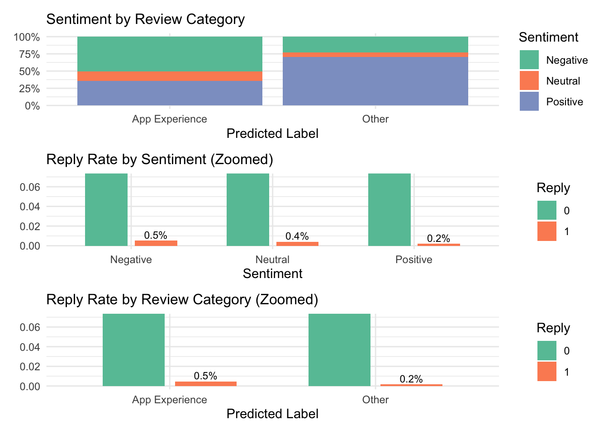
Key observations include:
- Among reviews classified as App Experience, over 50% expressed Negative sentiment, suggesting users frequently raise functional frustrations.
- By contrast, reviews in the Other category were more likely to be Positive, reflecting music enjoyment or general appreciation.
- Although only 0.35% of reviews were replied to overall, responses were concentrated among App Experience and Negative reviews, indicating Spotify’s limited replies prioritize user complaints about app functionality.
These patterns suggest that Spotify’s limited replies are primarily directed at addressing functionality-related complaints.
4.4 Topic Modeling Within App Experience
To further explore user feedback, I applied Latent Dirichlet Allocation (LDA) to the subset of reviews classified as App Experience by the TF-IDF Lasso classifier. This helps identify major sub-themes within app-related reviews.
4.4.1 LDA Modeling
An LDA model with K = 6 topics was fitted to the preprocessed document-feature matrix. The number of topics was selected based on the interpretability and coherence of the resulting themes.
Each review was assigned a dominant topic based on the highest posterior probability.
Show Code
# Subset App Experience reviews
app_reviews <- newreview %>%
filter(Predicted_Label == "App Experience")
# Create DFM
app_dfm <- tokens(app_reviews$Review,
remove_punct = TRUE,
remove_numbers = TRUE,
remove_symbols = TRUE) %>%
dfm() %>%
dfm_remove(stopwords("en")) %>%
dfm_trim(min_docfreq = 5, docfreq_type = "count")
empty_rows <- which(rowSums(app_dfm) == 0)
length(empty_rows)
# Set number of topics
K <- 6
# Run LDA model
set.seed(123)
lda_app <- LDA(app_dfm,
k = K,
method = "Gibbs",
control = list(seed = 123, burnin = 1000, iter = 2000))
# Save model and related outputs
saveRDS(lda_app, "model/lda_model_app_experience.rds")
beta_lda <- tidy(lda_app, matrix = "beta")
write.csv(beta_lda, "data/lda_beta_terms.csv", row.names = FALSE)
app_reviews$Topic <- get_topics(lda_app, 1)
write.csv(app_reviews, "data/app_reviews_with_topic.csv", row.names = FALSE)The distribution of reviews across the six topics was checked to ensure balanced coverage, with each topic capturing a meaningful proportion of documents.
Show Code
# Load saved results
lda_app <- readRDS("model/lda_model_app_experience.rds")
beta_lda <- read.csv("data/lda_beta_terms.csv")
app_reviews <- read.csv("data/app_reviews_with_topic.csv")
# Check how many documents are in each topic
table(app_reviews$Topic)
1 2 3 4 5 6
7005 5383 4825 7221 6711 6650 4.4.2 Topic Interpretation
Top terms for each topic were extracted and visualized.
Show Code
# Get top 10 terms per topic
beta_lda <- beta_lda %>% mutate(topic = as.factor(topic))
top_beta_terms <- beta_lda %>%
group_by(topic) %>%
slice_max(order_by = beta, n = 10) %>%
ungroup()
# Plot
top_beta_terms %>%
mutate(term = reorder_within(term, beta, topic)) %>%
ggplot(aes(x = beta, y = term, fill = topic)) +
geom_col(show.legend = FALSE, width = 0.8) +
facet_wrap(~ topic, scales = "free", ncol = 3) +
scale_y_reordered() +
scale_fill_brewer(palette = "Set2") +
labs(
title = "Top 10 Terms per Topic",
subtitle = "LDA topic modeling on App Experience reviews",
x = "Beta (Topic-Term Probability)",
y = NULL
) +
theme_minimal(base_size = 12) +
theme(
strip.text = element_text(face = "bold", size = 11),
plot.title = element_text(face = "bold", hjust = 0.5, size = 14),
plot.subtitle = element_text(hjust = 0.5, size = 11),
axis.text.y = element_text(size = 10),
axis.text.x = element_text(size = 10)
)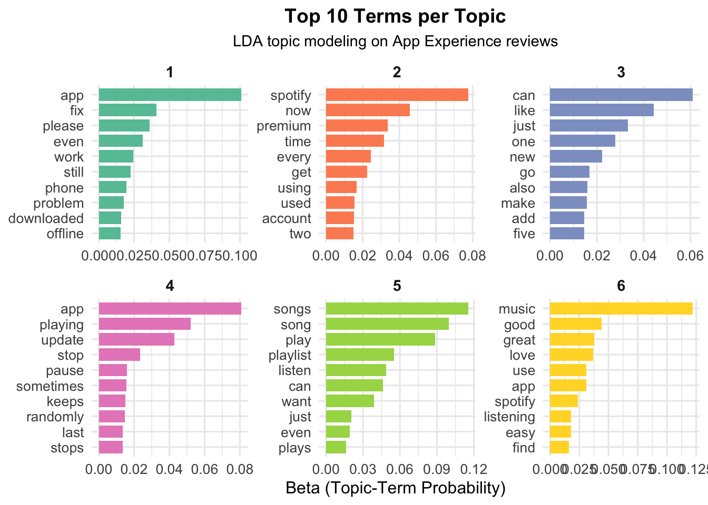
Show Code
print(top_beta_terms)# A tibble: 60 × 3
topic term beta
<fct> <chr> <dbl>
1 1 app 0.101
2 1 fix 0.0410
3 1 please 0.0361
4 1 even 0.0311
5 1 work 0.0244
6 1 still 0.0224
7 1 phone 0.0194
8 1 problem 0.0176
9 1 downloaded 0.0158
10 1 offline 0.0154
# ℹ 50 more rowsShow Code
# write.csv(top_beta_terms, "data/lda_topic_keywords_top.csv", row.names = FALSE)The dominant topic for each review was assigned based on the maximum posterior probability.
Show Code
# Extract document-topic probabilities (gamma matrix)
doc_topic_matrix <- tidy(lda_app, matrix = "gamma")
# Rank topics by gamma
doc_topic_ranked <- doc_topic_matrix %>%
group_by(document) %>%
arrange(document, desc(gamma)) %>%
mutate(topic_rank = row_number())
# Top-ranked topic per document
doc_labels <- doc_topic_ranked %>%
filter(topic_rank == 1) %>%
select(document, topic, gamma)
head(doc_labels, 10)| document | topic | gamma |
|---|---|---|
| text1 | 6 | 0.2433862 |
| text10 | 4 | 0.2380952 |
| text100 | 4 | 0.2190476 |
| text1000 | 5 | 0.2163743 |
| text10000 | 2 | 0.2150538 |
| text10001 | 3 | 0.2100457 |
| text10002 | 6 | 0.2208835 |
| text10003 | 1 | 0.1949686 |
| text10004 | 6 | 0.2021858 |
| text10005 | 5 | 0.2259887 |
The six topics identified are:
| Topic | Interpretation |
|---|---|
| Technical Fixes | Bugs, app malfunctions, connection issues. |
| Account & Subscription | Issues with login, billing, and premium access. |
| General UX Feedback | Vague usability comments, minor frustrations. |
| Playback Issues | Playback interruptions, particularly post-updates. |
| Music and Playlist Features | Complaints or praises about playlists and song organization. |
| Positive Experience | Expressions of user satisfaction and loyalty. |
These categories provide valuable subthemes for understanding the broader App Experience classification. No additional topics (e.g., K = 8 or K = 10) were deemed necessary as this configuration was already coherent.
These topic labels were subsequently merged back into the full dataset.
Show Code
topic_labels <- c(
"topic_1" = "Technical Fixes",
"topic_2" = "Account & Subscription",
"topic_3" = "General UX Feedback",
"topic_4" = "Playback Issues",
"topic_5" = "Music and Playlist Features",
"topic_6" = "Positive Experience"
)
app_reviews$TopicLabel <- paste0("topic_", app_reviews$Topic)
app_reviews$PredictedLabel_LDA <- topic_labels[app_reviews$TopicLabel]
head(app_reviews[, c("Topic", "TopicLabel", "PredictedLabel_LDA")])| Topic | TopicLabel | PredictedLabel_LDA |
|---|---|---|
| 6 | topic_6 | Positive Experience |
| 3 | topic_3 | General UX Feedback |
| 3 | topic_3 | General UX Feedback |
| 4 | topic_4 | Playback Issues |
| 5 | topic_5 | Music and Playlist Features |
| 4 | topic_4 | Playback Issues |
Reviews not classified as App Experience were assigned the label Other.
Show Code
# Merge back with full dataset
newreview$PredictedLabel_LDA <- NA
# Fill in topic labels only for App Experience rows
newreview$PredictedLabel_LDA[newreview$Predicted_Label == "App Experience"] <- app_reviews$PredictedLabel_LDA
# Replace NA with "Other" for non-App Experience
newreview$PredictedLabel_LDA[is.na(newreview$PredictedLabel_LDA)] <- "Other"
# Check label distribution
table(newreview$PredictedLabel_LDA)
Account & Subscription General UX Feedback
5383 4825
Music and Playlist Features Other
6711 23120
Playback Issues Positive Experience
7221 6650
Technical Fixes
7005 Show Code
# write.csv(newreview, "data/newreview_with_lda_labels.csv", row.names = FALSE)Topic interpretations further confirmed user concerns and praises:
- Technical Fixes and Playback Issues were primary sources of dissatisfaction.
- Account & Subscription issues underscore the importance of seamless service access to maintaining customer loyalty.
Show Code
# Get top 50 terms for each topic
par(mfrow = c(2, 3)) # Arrange in a 2x3 grid
top_terms_for_cloud <- beta_lda %>%
group_by(topic) %>%
slice_max(order_by = beta, n = 50) %>%
ungroup()
# Create a lookup for topic labels
topic_label_lookup <- c(
"1" = "Technical Fixes",
"2" = "Account & Subscription",
"3" = "General UX Feedback",
"4" = "Playback Issues",
"5" = "Music and Playlist Features",
"6" = "Positive Experience"
)
# Generate a word cloud per topic with title
for (i in 1:6) {
topic_data <- top_terms_for_cloud %>% filter(topic == i)
wordcloud(
words = topic_data$term,
freq = topic_data$beta,
max.words = 50,
scale = c(3, 0.5),
colors = brewer.pal(8, "Dark2"),
random.order = FALSE
)
title(main = paste("Topic", i, ":", topic_label_lookup[as.character(i)]))
}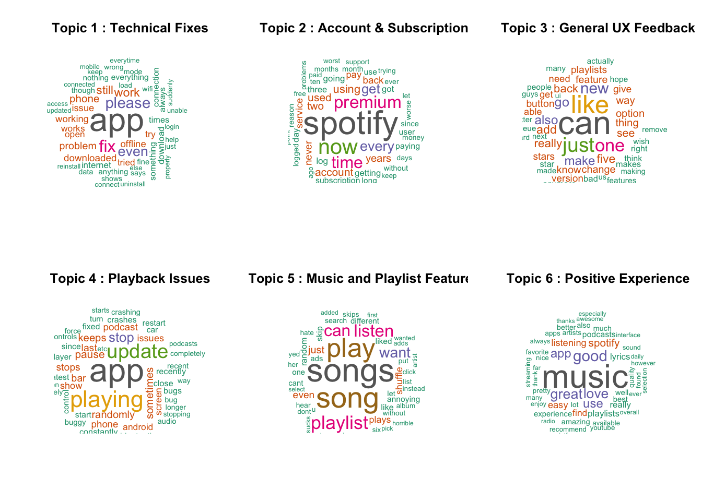
Show Code
par(mfrow = c(1, 1)) Topic Interpretations by Word Cloud:
Topic 1 – Technical Fixes: This topic captures reviews highlighting technical breakdowns, where users repeatedly mention bugs, connection issues, and general malfunctioning. Keywords like fix, offline, phone, and problem suggest users are facing disruptions that prevent basic usage of the app. These reviews tend to be urgent, and reflect a desire for immediate resolution. In a dataset of over 60,000 reviews, these issues represent one of the most common causes for dissatisfaction and tend to be rated poorly.
Topic 2 – Account & Subscription: Many users encounter problems related to logging in, renewing subscriptions, or accessing premium features after payment. With terms like account, used, spotify, and premium, this topic reflects frustration with service access or billing irregularities. This issue is particularly important given Spotify’s business model depends on seamless conversion to paid accounts.
Topic 3 – General UX Feedback: This topic is marked by subjective and general user impressions. Words like can, like, just, and new imply vague or mixed experiences about the layout, buttons, or app responsiveness. The reviews are often neutral in sentiment and reflect small annoyances or subtle praises. As a middle-ground topic, it highlights areas where UX improvement might enhance overall satisfaction.
Topic 4 – Playback Issues: Here, users complain about interruptions in playback functionality, especially after software updates. Commonly used terms like pause, playing, and stops suggest broken streaming flow. These reviews often report a once-functional feature that suddenly fails, making them especially frustrating for regular users who rely on the app daily.
Topic 5 – Music and Playlist Features: This is the most content-focused topic, showing user interaction with the core musical experience. Keywords like songs, playlist, and listen indicate that users care deeply about how music is organized and played. Frustrations arise when shuffle doesn’t work or playlists behave unexpectedly, but the tone is often less aggressive than technical complaints.
Topic 6 – Positive Experience: These reviews express gratitude and overall delight with Spotify. Words like music, good, great, and love dominate, showcasing strong user loyalty and satisfaction. These reviews frequently highlight the breadth of content, smooth interface, or high-quality streaming, and are overwhelmingly rated 4 or 5 stars. From a platform perspective, they signal what’s working well.
5. Platform Reply Analysis
5.1 Overview
Spotify replies to only a small portion of user reviews (~215 out of over 61,000). To evaluate reply behavior, the dataset (“newreview”) is divided into two groups:
- Reviews that received an official reply (Replied = 1)
- Reviews that did not receive a reply (Replied = 0)
5.2 Emotion Scoring Using NRC Lexicon
Show Code
# Load NRC lexicon
data("get_sentiments")
nrc <- get_sentiments("nrc")
newreview <- newreview %>%
mutate(ID = row_number())
# Tokenize reviews
review_tokens <- newreview %>%
select(ID, Review) %>%
unnest_tokens(word, Review) %>%
inner_join(nrc, by = "word")
# Count number of emotion words per review (e.g., anger)
emotion_scores <- review_tokens %>%
group_by(ID, sentiment) %>%
summarise(score = n(), .groups = "drop") %>%
pivot_wider(names_from = sentiment, values_from = score, values_fill = 0)
# Join scores back to main dataset
newreview <- left_join(newreview, emotion_scores, by = "ID")
# Replace NA with 0 for all NRC emotions
emotion_cols <- setdiff(colnames(emotion_scores), "ID")
newreview[emotion_cols] <- lapply(newreview[emotion_cols], function(x) ifelse(is.na(x), 0, x))
# Preview emotion score distribution
summary(newreview$anger) Min. 1st Qu. Median Mean 3rd Qu. Max.
0.0000 0.0000 0.0000 0.3168 0.0000 8.0000 Show Code
summary(newreview$joy) Min. 1st Qu. Median Mean 3rd Qu. Max.
0.000 0.000 1.000 1.066 2.000 15.000 5.3 Compare Emotions: Replied vs. Not Replied
Show Code
# Compare average anger and other emotions between replied vs unreplied reviews
emotion_summary <- newreview %>%
group_by(Replied) %>%
summarise(across(all_of(emotion_cols), mean))Emotions for each sub-topics show similar distributions except for the positive feedback.
Show Code
# Prepare long-format data for plotting
emotion_plot_data <- newreview %>%
group_by(Replied) %>%
summarise(across(all_of(emotion_cols), mean)) %>%
pivot_longer(cols = -Replied, names_to = "Emotion", values_to = "MeanScore") %>%
mutate(Emotion = str_to_title(Emotion)) # Capitalize for better x-axis labels
# Plot: Emotion levels by reply status
ggplot(emotion_plot_data, aes(x = Emotion, y = MeanScore, fill = factor(Replied))) +
geom_col(position = position_dodge(width = 0.7), width = 0.6) +
scale_fill_manual(values = c("#cccccc", "#66c2a5"), labels = c("Not Replied", "Replied")) +
labs(
title = "Average Emotion Scores by Reply Status",
x = "Emotion",
y = "Average Score",
fill = "Reply Status"
) +
theme_minimal(base_size = 12) +
theme(
axis.text.x = element_text(angle = 30, hjust = 1),
plot.title = element_text(face = "bold", hjust = 0.5)
)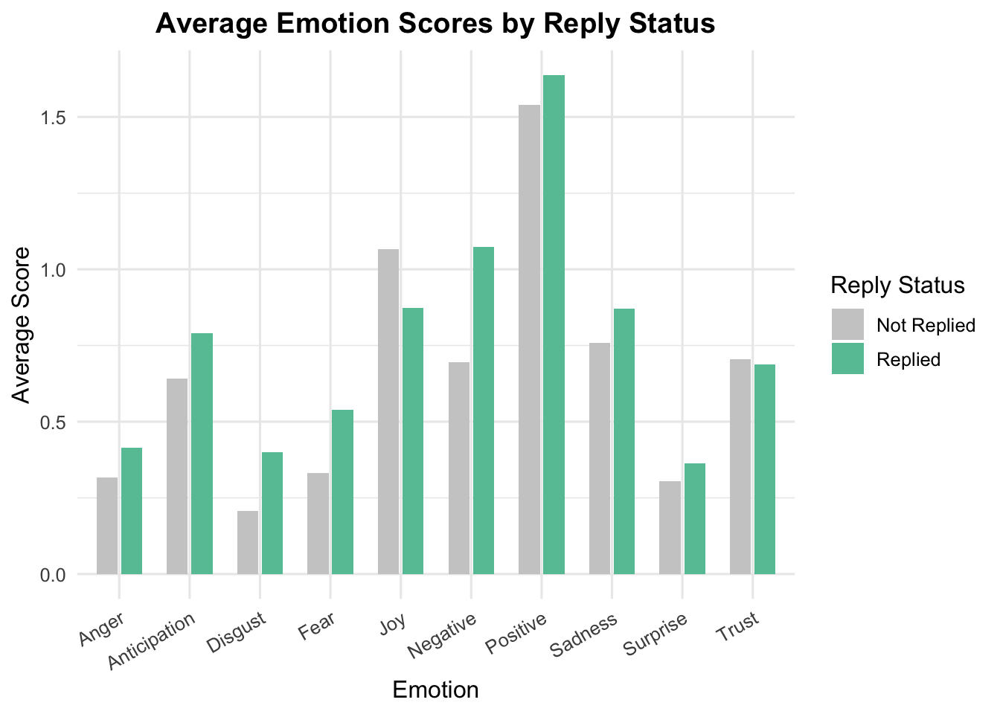
Different topics seem to share similar distributions of emotion score, except for the Positive Experience one.
Show Code
# Prepare long-format data by LDA Topic
emotion_topic_data <- newreview %>%
group_by(PredictedLabel_LDA) %>%
summarise(across(all_of(emotion_cols), mean)) %>%
pivot_longer(cols = -PredictedLabel_LDA, names_to = "Emotion", values_to = "MeanScore") %>%
mutate(
Emotion = str_to_title(Emotion),
PredictedLabel_LDA = str_replace_all(PredictedLabel_LDA, "_", " ")
)
# Fix visualization: each facet is a topic, X axis is emotion
ggplot(emotion_topic_data, aes(x = Emotion, y = MeanScore, fill = PredictedLabel_LDA)) +
geom_col(position = position_dodge(width = 0.8), width = 0.6) +
facet_wrap(~ PredictedLabel_LDA, scales = "free_y", ncol = 2) +
scale_fill_brewer(palette = "Set3") +
labs(
title = "Emotion Scores Across Topics",
x = "Emotion",
y = "Average Score",
fill = "Topic"
) +
theme_minimal(base_size = 12) +
theme(
strip.text = element_text(face = "bold", size = 11),
axis.text.x = element_text(angle = 30, hjust = 1),
plot.title = element_text(face = "bold", hjust = 0.5)
)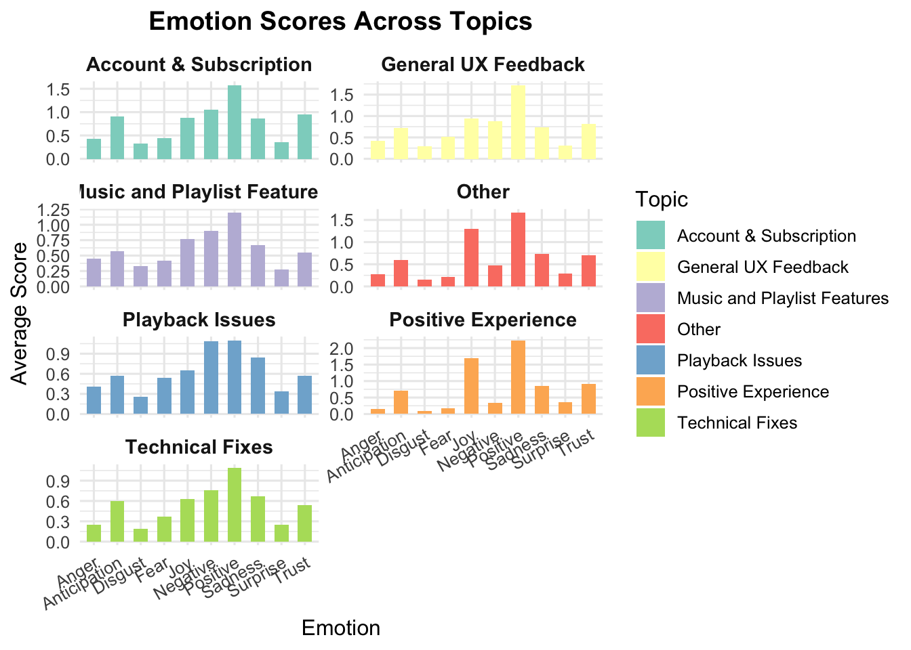
Show Code
# Heatmap style: Topic vs Emotion
ggplot(emotion_topic_data, aes(x = Emotion, y = fct_rev(PredictedLabel_LDA), fill = MeanScore)) +
geom_tile(color = "white") +
scale_fill_gradient(low = "#f0f9e8", high = "#08589e") +
labs(
title = "Emotion Intensity by Topic",
x = "Emotion",
y = "Topic",
fill = "Avg. Score"
) +
theme_minimal(base_size = 12) +
theme(
axis.text.x = element_text(angle = 30, hjust = 1),
plot.title = element_text(face = "bold", hjust = 0.5)
)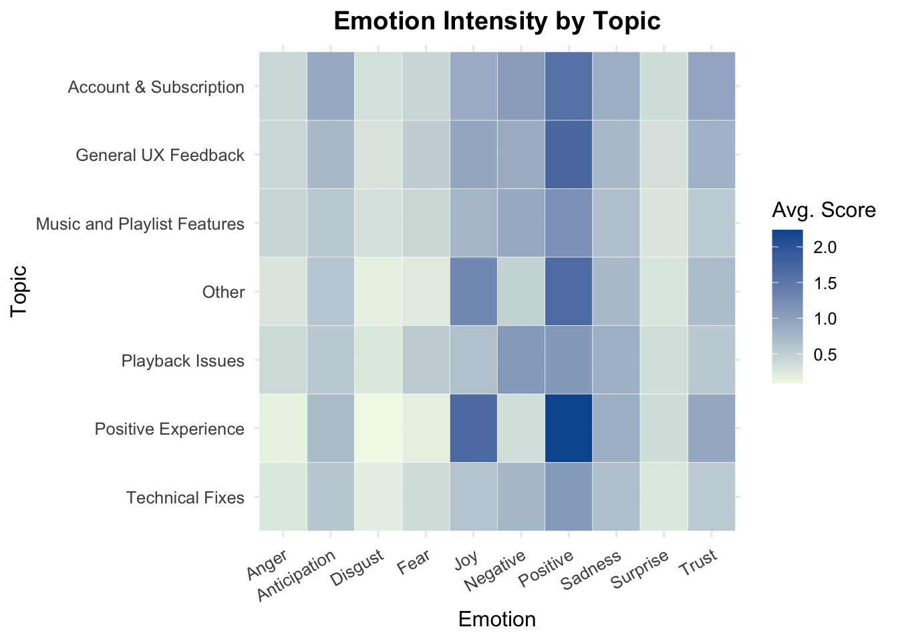
5.4 Logistic Regression: Predicting Replies
This section explores Spotify’s reply logic. The model includes multiple emotional scores from the NRC lexicon, review length, competitor mentions, and topic labels.
By using the NRC lexicon, we evaluate whether emotional tone correlates with reply likelihood. Logistic regression results further test if variables like review length and competitor mentions influence platform response behavior.
The model is specified as:
\[ \begin{aligned} \text{logit}(\Pr(\text{Replied}_i = 1)) =&\ \beta_0 + \beta_1 \cdot \text{anticipation}_i + \beta_2 \cdot \text{anger}_i + \beta_3 \cdot \text{disgust}_i + \beta_4 \cdot \text{fear}_i \\ &+ \beta_5 \cdot \text{joy}_i + \beta_6 \cdot \text{sadness}_i + \beta_7 \cdot \text{surprise}_i + \beta_8 \cdot \text{trust}_i \\ &+ \beta_9 \cdot \text{negative}_i + \beta_{10} \cdot \text{positive}_i + \beta_{11} \cdot \text{word\_count}_i \\ &+ \beta_{12} \cdot \text{competitor\_mention}_i + \beta_{13} \cdot \text{PredictedLabel\_LDA}_i + \varepsilon_i \end{aligned} \]
Show Code
# Add helper features
newreview$word_count <- str_count(newreview$Review, '\\w+')
# Expand list of competitor platforms
competitor_pattern <- "apple music|youtube music|amazon music|tidal|pandora|soundcloud|deezer|qobuz|napster|audiomack|anghami|gaana|jiosaavn|wynk|boomplay|vk music|yandex music|melon|kkbox|netease|kugou|xiami|qq music|pandora|deezer"
newreview$competitor_mention <- ifelse(str_detect(tolower(newreview$Review), competitor_pattern), 1, 0)
# Count number and proportion of reviews mentioning competitors
# table(newreview$competitor_mention)
#prop.table(table(newreview$competitor_mention))Competitor Analysis
- Users most frequently mention Pandora, YouTube Music, and Apple Music when discussing alternatives.
Show Code
competitors <- c("apple music", "youtube music", "amazon music", "tidal", "pandora", "soundcloud", "deezer",
"qobuz", "napster", "audiomack", "anghami", "gaana", "jiosaavn", "wynk", "boomplay",
"vk music", "yandex music", "melon", "kkbox", "netease", "kugou", "xiami", "qq music")
competitor_counts <- sapply(competitors, function(comp) {
sum(str_detect(tolower(newreview$Review), fixed(comp)))
})
competitor_counts_df <- tibble(
Competitor = names(competitor_counts),
Mentions = as.integer(competitor_counts)
) %>%
arrange(desc(Mentions))
ggplot(competitor_counts_df, aes(x = reorder(Competitor, Mentions), y = Mentions)) +
geom_col(fill = "#63c2a3") +
coord_flip() +
labs(
title = "Mentions of Competitors in Spotify Reviews",
x = "Competitor",
y = "Number of Mentions"
) +
theme_minimal(base_size = 12) +
theme(plot.title = element_text(face = "bold", hjust = 0.5))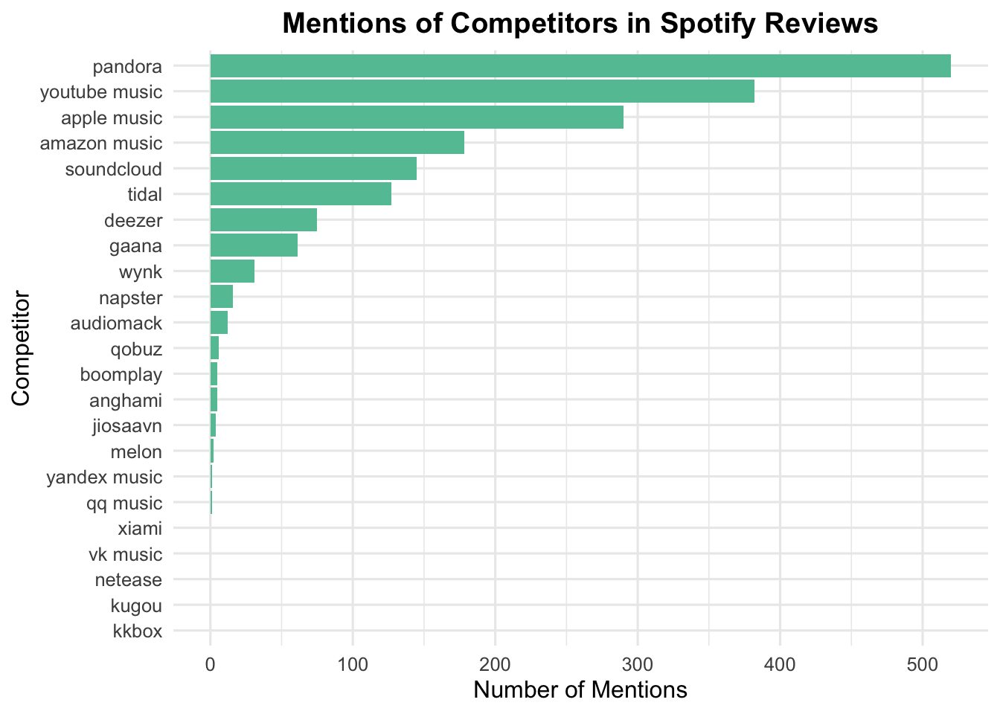
Show Code
# Top 5
top_competitors <- competitor_counts_df %>%
slice_max(order_by = Mentions, n = 5) %>%
pull(Competitor)
# only Top 5 review
top_comp_reviews <- newreview %>%
filter(competitor_mention == 1) # 只要有mention competitor
comp_emotion_list_top <- lapply(top_competitors, function(comp) {
top_comp_reviews %>%
filter(str_detect(tolower(Review), fixed(comp))) %>%
summarise(across(all_of(emotion_cols), mean, na.rm = TRUE)) %>%
mutate(Competitor = comp)
})
comp_emotion_top_df <- bind_rows(comp_emotion_list_top)
comp_emotion_top_long <- comp_emotion_top_df %>%
pivot_longer(cols = -Competitor, names_to = "Emotion", values_to = "AvgScore") %>%
mutate(Emotion = str_to_title(Emotion))
ggplot(comp_emotion_top_long, aes(x = Emotion, y = AvgScore, fill = Competitor)) +
geom_col(position = position_dodge(width = 0.7), width = 0.6) +
labs(
title = "Emotion Scores for Top Competitors",
x = "Emotion",
y = "Average Score",
fill = "Competitor"
) +
scale_fill_brewer(palette = "Set2") +
theme_minimal(base_size = 12) +
theme(
plot.title = element_text(face = "bold", hjust = 0.5),
axis.text.x = element_text(angle = 30, hjust = 1)
)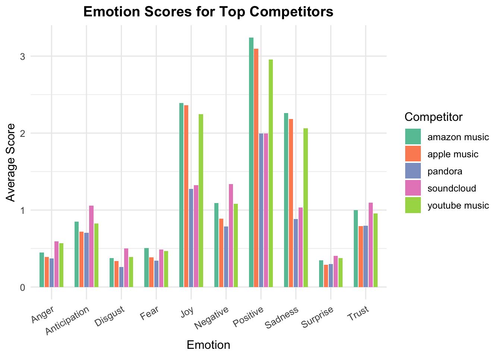
Show Code
# Heatmap: Emotion scores for Top 5 Competitors
ggplot(comp_emotion_top_long, aes(x = Emotion, y = reorder(Competitor, -AvgScore), fill = AvgScore)) +
geom_tile(color = "white") +
scale_fill_gradient(low = "#f7fcf0", high = "#006d2c") + # 柔和绿到深绿
labs(
title = "Emotion Intensity for Top Competitors",
x = "Emotion",
y = "Competitor",
fill = "Avg Score"
) +
theme_minimal(base_size = 12) +
theme(
axis.text.x = element_text(angle = 30, hjust = 1),
plot.title = element_text(face = "bold", hjust = 0.5),
axis.text.y = element_text(size = 10)
)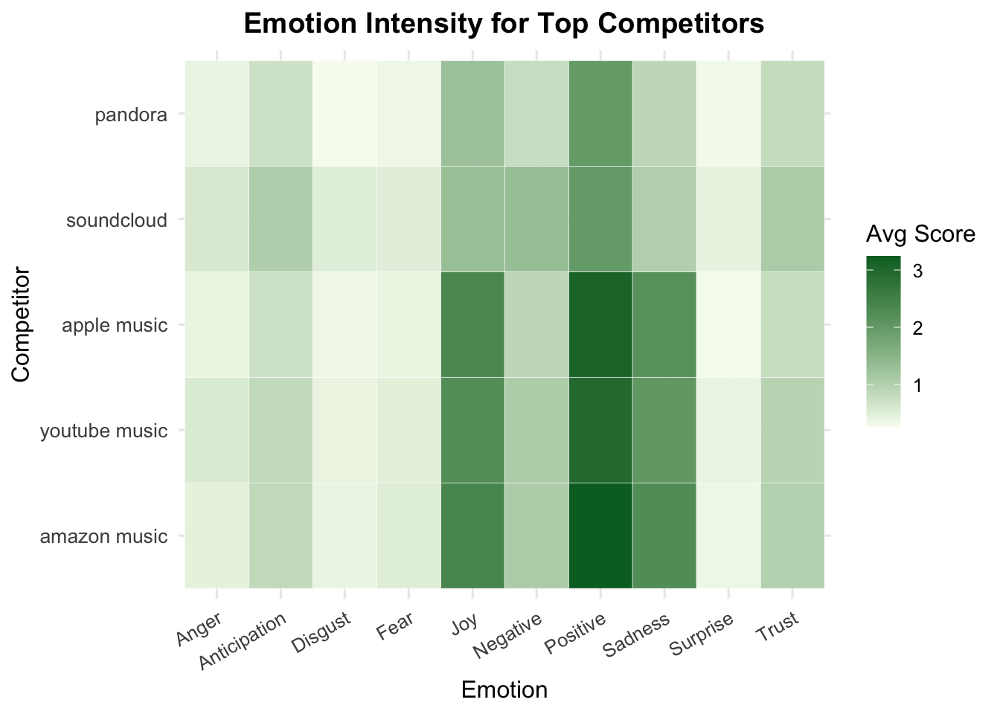
This bar chart illustrates the average emotion scores for Spotify reviews that mention each of the top five competing platforms. The emotional responses reflect both positive comparisons and points of dissatisfaction, helping Spotify understand user sentiment toward alternatives.
Show Code
comp_sentiment_list_top <- lapply(top_competitors, function(comp) {
top_comp_reviews %>%
filter(str_detect(tolower(Review), fixed(comp))) %>%
count(Sentiment) %>%
mutate(Competitor = comp,
Proportion = n / sum(n))
})
comp_sentiment_df <- bind_rows(comp_sentiment_list_top)
ggplot(comp_sentiment_df, aes(x = Competitor, y = Proportion, fill = Sentiment)) +
geom_col(position = "fill") +
scale_y_continuous(labels = scales::percent_format()) +
scale_fill_brewer(palette = "Set2") +
labs(
title = "Sentiment Distribution for Reviews Mentioning Top Competitors",
x = "Competitor",
y = "Share of Sentiment",
fill = "Sentiment"
) +
theme_minimal(base_size = 12) +
theme(plot.title = element_text(face = "bold", hjust = 0.5))
While reviews mentioning Apple Music, YouTube Music, and Amazon Music exhibit the highest average scores for joy and positive emotions, a closer look at sentiment classification reveals a more clear picture:
- SoundCloud is most frequently mentioned in negative reviews, suggesting that users reference it while expressing dissatisfaction with Spotify or making unfavorable comparisons.
- YouTube Music and Amazon Music are also frequently cited in negative reviews, indicating these competitors are often brought up in complaints or frustrations.
- In contrast, Apple Music and Pandora are more likely to be mentioned in positive or neutral reviews, reinforcing their favorable perception among Spotify users.
This contrast between emotional tone and sentiment classification suggests that positive emotions in competitor mentions do not always reflect positive evaluations of Spotify. Instead, they may highlight the perceived strengths of rival platforms.
For Spotify, this indicates the need to monitor not only how often competitors are mentioned, but also why—and in what emotional and evaluative context.
Descriptive overview for regression
Show Code
# Plot 7: Word Count Histogram
p7 <- ggplot(newreview, aes(x = word_count)) +
geom_histogram(bins = 40, fill = "#66c2a5") +
labs(title = "Review Word Counts Distribution",
x = "Word Count", y = "Count") +
theme_minimal(base_size = 11)
# Plot 8: Competitor Mention Bar Plot with % label
competitor_dist <- newreview %>%
count(competitor_mention) %>%
mutate(share = round(100 * n / sum(n), 1))
p8 <- ggplot(competitor_dist, aes(x = factor(competitor_mention), y = n, fill = factor(competitor_mention))) +
geom_col(show.legend = FALSE, width = 0.5) +
geom_text(aes(label = paste0(share, "%")), vjust = -0.5, size = 4.2) +
scale_x_discrete(labels = c("0" = "No Competitor", "1" = "Mentions Competitor")) +
scale_fill_manual(values = c("#fc8d62", "#e34a33")) +
labs(title = "Competitor Mentions",
x = "Mentioned", y = "Number of Reviews") +
ylim(0, max(competitor_dist$n) * 1.1) +
theme_minimal(base_size = 11)
# Plot 9: LDA Topics Distribution (flipped)
p9 <- newreview %>%
count(PredictedLabel_LDA) %>%
ggplot(aes(x = reorder(PredictedLabel_LDA, n), y = n, fill = PredictedLabel_LDA)) +
geom_col(show.legend = FALSE) +
labs(title = "Distribution of LDA Topics", x = "Topic Label", y = "Count") +
scale_fill_brewer(palette = "Set2") +
coord_flip() +
theme_minimal()
# Layout
(p7 | p8) / p9
Show Code
# Logistic regression model using multiple NRC emotions and LDA topic
reply_model <- glm(Replied ~ anticipation + anger + disgust + fear + joy +
sadness + surprise + trust + negative + positive +
word_count + competitor_mention + PredictedLabel_LDA,
data = newreview, family = binomial)
summary(reply_model)
Call:
glm(formula = Replied ~ anticipation + anger + disgust + fear +
joy + sadness + surprise + trust + negative + positive +
word_count + competitor_mention + PredictedLabel_LDA, family = binomial,
data = newreview)
Coefficients:
Estimate Std. Error z value
(Intercept) -5.528479 0.206646 -26.753
anticipation 0.048980 0.089602 0.547
anger -0.282509 0.137376 -2.056
disgust 0.463567 0.137965 3.360
fear 0.086130 0.119042 0.724
joy -0.239760 0.120502 -1.990
sadness -0.078987 0.107006 -0.738
surprise 0.107019 0.130241 0.822
trust -0.225708 0.104550 -2.159
negative -0.017157 0.096034 -0.179
positive 0.178996 0.074093 2.416
word_count 0.009909 0.003190 3.107
competitor_mention -0.102998 0.425679 -0.242
PredictedLabel_LDAGeneral UX Feedback 0.075525 0.251731 0.300
PredictedLabel_LDAMusic and Playlist Features -0.717480 0.288181 -2.490
PredictedLabel_LDAOther -1.031103 0.250053 -4.124
PredictedLabel_LDAPlayback Issues 0.176071 0.229080 0.769
PredictedLabel_LDAPositive Experience -0.915045 0.348814 -2.623
PredictedLabel_LDATechnical Fixes -0.288464 0.255075 -1.131
Pr(>|z|)
(Intercept) < 2e-16 ***
anticipation 0.584628
anger 0.039737 *
disgust 0.000779 ***
fear 0.469354
joy 0.046626 *
sadness 0.460421
surprise 0.411249
trust 0.030862 *
negative 0.858208
positive 0.015699 *
word_count 0.001892 **
competitor_mention 0.808810
PredictedLabel_LDAGeneral UX Feedback 0.764159
PredictedLabel_LDAMusic and Playlist Features 0.012786 *
PredictedLabel_LDAOther 3.73e-05 ***
PredictedLabel_LDAPlayback Issues 0.442131
PredictedLabel_LDAPositive Experience 0.008708 **
PredictedLabel_LDATechnical Fixes 0.258099
---
Signif. codes: 0 '***' 0.001 '**' 0.01 '*' 0.05 '.' 0.1 ' ' 1
(Dispersion parameter for binomial family taken to be 1)
Null deviance: 2857.3 on 60914 degrees of freedom
Residual deviance: 2731.7 on 60896 degrees of freedom
AIC: 2769.7
Number of Fisher Scoring iterations: 9Show Code
# Compute McFadden's pseudo R-squared
pR2(reply_model)fitting null model for pseudo-r2 llh llhNull G2 McFadden r2ML
-1.365859e+03 -1.428638e+03 1.255579e+02 4.394319e-02 2.059075e-03
r2CU
4.493552e-02 Show Code
# Confirm number of observations used
nobs(reply_model)[1] 60915Show Code
modelsummary(reply_model, output = "figures/regression_results_table.html")Key Findings
Joy is negatively associated with receiving a reply (p = 0.047), suggesting that more cheerful reviews are less likely to get a response.
Disgust, Positive Sentiment, and Trust are statistically significant:
- Disgust (p < 0.001) and Positive (p = 0.016) are positively associated with replies.
- Trust (p = 0.031) is negatively associated, indicating that trusting language may reduce the likelihood of a response.
Anger, Sadness, Fear, and Surprise are not significant predictors.
Word Count is a strong predictor (p < 0.001): longer reviews are more likely to receive a reply.
LDA Topics matter:
- Reviews categorized under Music and Playlist Features, Positive Experience, and Other are significantly less likely to receive a reply compared to the reference category, Account & Subscription.
Competitor Mention has no significant effect on reply likelihood.
Model Fit
- McFadden’s R² = 0.044, indicating a modest improvement over the null model. While low, this is expected given the rarity of replies (<1%).
- Observations: The model used 60,915 reviews.
Conclusion
Spotify appears more responsive to longer reviews with moderate emotion—especially those expressing dissatisfaction through disgust rather than direct anger. While joyful and trusting language reduces the chance of receiving a reply, technical or account-related frustrations are more likely to attract attention. Reviews focused on music features or general positivity tend to be deprioritized in platform engagement.
5.5 Logistic Regression with SMOTE Adjustment
To address class imbalance in the original logistic regression model—where only 3.5% of reviews received replies—I implemented SMOTE to synthetically rebalance the dataset. The adjusted model was trained on the oversampled data and presented alongside the original model.
Key comparisons indicate whether predictors retain statistical significance under balanced conditions, and whether coefficients shift notably due to oversampling. While interpretability may decrease slightly due to synthetic data, the results help validate the robustness of key findings regarding emotional tone and topic labels.
A side-by-side comparison of the original and SMOTE-adjusted model is included.
- SMOTE creates synthetic examples for the minority class (Replied = 1) by interpolating between existing cases.
- It helps the model learn from a more balanced dataset, reducing bias toward the majority class (Not Replied).
- After SMOTE, the number of observations doubles (~60k → ~120k) due to newly generated synthetic records for Replied cases.
Show Code
# Prepare data
newreview_bal <- newreview %>%
select(Replied, anticipation, anger, disgust, fear, joy,
sadness, surprise, trust, negative, positive,
word_count, competitor_mention, PredictedLabel_LDA) %>%
mutate(
Replied = as.factor(Replied),
PredictedLabel_LDA = factor(PredictedLabel_LDA)
)
# Ensure consistent reference level
newreview_bal$PredictedLabel_LDA <- relevel(newreview_bal$PredictedLabel_LDA, ref = "Account & Subscription")
# Apply SMOTE (requires numeric predictors only)
smote_input <- newreview_bal %>%
mutate(PredictedLabel_LDA = as.numeric(PredictedLabel_LDA)) # temporarily convert to numeric for SMOTE
set.seed(123)
smote_result <- SMOTE(smote_input[, -1], smote_input$Replied, K = 5)
smote_data <- smote_result$data
colnames(smote_data)[ncol(smote_data)] <- "Replied"
smote_data$Replied <- as.factor(smote_data$Replied)
# Reconvert topic label to factor with correct reference (because SMOTE strips factor structure)
# Restore topic label as factor using saved levels
topic_levels <- levels(newreview_bal$PredictedLabel_LDA)
smote_data$PredictedLabel_LDA <- factor(
topic_levels[smote_data$PredictedLabel_LDA],
levels = topic_levels
)
smote_data$PredictedLabel_LDA <- relevel(smote_data$PredictedLabel_LDA, ref = "Account & Subscription")
# Fit logistic regression model on SMOTE data
reply_model_smote <- glm(Replied ~ ., data = smote_data, family = binomial)
# Show summary
summary(reply_model_smote)
Call:
glm(formula = Replied ~ ., family = binomial, data = smote_data)
Coefficients:
Estimate Std. Error z value
(Intercept) 0.0111570 0.0214307 0.521
anticipation 0.1420189 0.0107953 13.156
anger -0.2015088 0.0159728 -12.616
disgust 0.3714693 0.0165206 22.485
fear -0.1063606 0.0142272 -7.476
joy -0.6087720 0.0141367 -43.063
sadness 0.0691906 0.0118232 5.852
surprise 0.0698321 0.0141610 4.931
trust -0.2118901 0.0111717 -18.967
negative -0.0616217 0.0109204 -5.643
positive 0.1596059 0.0088154 18.105
word_count 0.0225102 0.0003677 61.214
competitor_mention -0.7457436 0.0462649 -16.119
PredictedLabel_LDAGeneral UX Feedback 0.0186103 0.0254970 0.730
PredictedLabel_LDAMusic and Playlist Features -0.3953631 0.0245657 -16.094
PredictedLabel_LDAOther -0.9342834 0.0218043 -42.849
PredictedLabel_LDAPlayback Issues -0.1484487 0.0238372 -6.228
PredictedLabel_LDAPositive Experience -0.5597581 0.0268095 -20.879
PredictedLabel_LDATechnical Fixes -1.0979443 0.0270420 -40.601
Pr(>|z|)
(Intercept) 0.603
anticipation < 2e-16 ***
anger < 2e-16 ***
disgust < 2e-16 ***
fear 7.67e-14 ***
joy < 2e-16 ***
sadness 4.85e-09 ***
surprise 8.17e-07 ***
trust < 2e-16 ***
negative 1.67e-08 ***
positive < 2e-16 ***
word_count < 2e-16 ***
competitor_mention < 2e-16 ***
PredictedLabel_LDAGeneral UX Feedback 0.465
PredictedLabel_LDAMusic and Playlist Features < 2e-16 ***
PredictedLabel_LDAOther < 2e-16 ***
PredictedLabel_LDAPlayback Issues 4.74e-10 ***
PredictedLabel_LDAPositive Experience < 2e-16 ***
PredictedLabel_LDATechnical Fixes < 2e-16 ***
---
Signif. codes: 0 '***' 0.001 '**' 0.01 '*' 0.05 '.' 0.1 ' ' 1
(Dispersion parameter for binomial family taken to be 1)
Null deviance: 168199 on 121329 degrees of freedom
Residual deviance: 148495 on 121311 degrees of freedom
AIC: 148533
Number of Fisher Scoring iterations: 4Show Code
# Calculate McFadden R²
pR2(reply_model_smote)fitting null model for pseudo-r2 llh llhNull G2 McFadden r2ML
-7.424746e+04 -8.409953e+04 1.970413e+04 1.171477e-01 1.498999e-01
r2CU
1.998665e-01 Show Code
# Output side-by-side comparison
modelsummary(
list("Original Model" = reply_model, "SMOTE Adjusted Model" = reply_model_smote),
output = "figures/logistic_comparison_original_vs_smote_refset.html"
)After correcting for severe class imbalance using SMOTE, most emotional and topic effects remained stable or became stronger. Notably, complaints about Playback Issues turned from a weak positive to a significant negative predictor of receiving a reply, suggesting that Spotify may systematically deprioritize addressing streaming disruptions. The adjusted model reinforces that account and subscription problems are Spotify’s top reply priority, while technical bugs and general app frustrations are less likely to elicit a response, reflecting platform-level engagement strategies.
Show Code
results <- tribble(
~Variable, ~Category, ~Original, ~SMOTE,
"(Intercept)", "Intercept", -5.528, 0.011,
"anticipation", "Emotion", 0.049, 0.142,
"anger", "Emotion", -0.283, -0.202,
"disgust", "Emotion", 0.464, 0.371,
"fear", "Emotion", 0.086, -0.106,
"joy", "Emotion", -0.240, -0.609,
"sadness", "Emotion", -0.079, 0.069,
"surprise", "Emotion", 0.107, 0.070,
"trust", "Emotion", -0.226, -0.212,
"negative", "Emotion", -0.017, -0.062,
"positive", "Emotion", 0.179, 0.160,
"word_count", "Control", 0.010, 0.023,
"competitor_mention", "Control", -0.103, -0.746,
"General UX Feedback", "Topic", 0.076, 0.019,
"Music and Playlist Features", "Topic", -0.717, -0.395,
"Other", "Topic", -1.031, -0.934,
"Playback Issues", "Topic", 0.176, -0.148,
"Positive Experience", "Topic", -0.915, -0.560,
"Technical Fixes", "Topic", -0.288, -1.098
)
results_long <- pivot_longer(results, cols = c(Original, SMOTE),
names_to = "Model", values_to = "Coefficient")
results_long$Variable <- factor(results_long$Variable,
levels = rev(results$Variable)) # 反向一下让图从上到下符合表格顺序
ggplot(results_long %>% filter(Variable != "(Intercept)"),
aes(x = Variable, y = Coefficient, fill = Model)) +
geom_col(position = position_dodge(width = 0.7), width = 0.6) +
geom_hline(yintercept = 0, linetype = "dashed", color = "gray40") +
facet_wrap(~ Category, scales = "fixed", nrow = 1) +
coord_flip() +
theme_minimal(base_size = 13) +
labs(title = "Comparison of Coefficient Estimates",
x = "Variable",
y = "Coefficient Estimate") +
scale_fill_manual(values = c("Original" = "steelblue", "SMOTE" = "darkorange")) +
theme(legend.position = "top",
strip.text = element_text(size = 12, face = "bold"))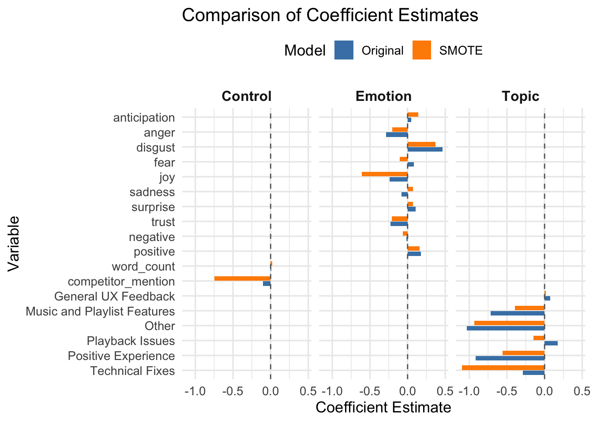
After applying SMOTE, nearly all predictors became statistically significant. This is expected because oversampling balances the dataset and substantially increases statistical power, reducing standard errors and enabling the model to detect even small effects. However, caution is necessary: significance does not always imply a large or meaningful effect size, and the model may risk overfitting due to synthetic sample generation. Future validation on an independent dataset is recommended to confirm the robustness of these findings.
6. Discussion
This study aimed to extract actionable insights from Spotify user reviews by applying text-as-data methods, with a focus on understanding user experiences and evaluating platform reply behavior. The findings offer valuable perspectives for both business strategy and digital platform governance.
6.1 User Experience Themes and Sentiment Patterns
Analysis of review text through supervised classification and topic modeling confirmed that the majority of user feedback centers around app functionality, technical performance, and usability, rather than music content itself. Reviews classified under App Experience topics were notably more likely to receive negative star ratings, underscoring persistent user frustrations with the app’s performance and service quality.
Topic modeling further revealed six major sub-themes within App Experience feedback, including technical issues, playback interruptions, account and subscription problems, and general UX feedback. These themes highlight critical areas where user satisfaction is most vulnerable. Moreover, sentiment analysis indicated that emotional expressions such as disgust and trust—both closely tied to service expectations—were prevalent among users experiencing dissatisfaction.
These results support the initial hypothesis that user-generated content provides a deeper and more nuanced understanding of customer satisfaction drivers, complementing traditional subscription metrics. For business strategy, targeting technical reliability and service accessibility may be pivotal to enhancing user retention.
6.2 Platform Reply Behavior and Transparency Implications
Logistic regression analysis of reply likelihood revealed several important patterns. Longer reviews were significantly more likely to receive a reply, suggesting that greater detail prompts more platform engagement. Emotional tone also mattered: reviews expressing disgust or positive sentiment were more likely to be replied to, while reviews conveying joy or trust were less likely to attract a response.
In terms of topical focus, reviews related to account and subscription issues were significantly more likely to receive replies compared to other categories such as music and playlist features or positive experiences. This selective engagement strategy indicates that Spotify prioritizes addressing technical service complaints over general user praise or feature feedback.
These findings align with broader concerns in digital platform governance regarding transparency and fairness. Although the overall reply rate was extremely low (under 1%), the selective nature of replies suggests that certain types of dissatisfaction are more visible to the platform, while positive or non-critical feedback may be systematically deprioritized. This asymmetry highlights the importance of transparent communication policies in maintaining user trust and accountability in digital services.
7. Conclusion
- ✅ Most users complain about app function, not music (RQ1 supported)
- 📉 Spotify replies mostly to negative, detailed reviews (disgust, account issues)
- 💬 Joyful/trusting reviews are often ignored—missed opportunity to engage satisfied users
- 🛠️ Reply strategy is reactive (problem), not proactive (praise) (RQ2 supported)
- 🔄 SMOTE results confirm key findings are robust
- ⚠️ Competitor mentions show emotion—signal of potential churn risk
Overall, this project demonstrates that text-as-data techniques can meaningfully reveal patterns in user experience and platform behavior. Understanding the emotional and thematic structure of user feedback provides actionable insights for service improvement and offers a lens into the operational transparency of digital platforms like Spotify. These results contribute to both business strategy considerations and emerging discussions about consumer protection and platform accountability in the digital economy.
8. References
Looka. (2024). The Spotify Logo: Embodying the sonic style of a streaming pioneer. Retrieved April 2025, from https://looka.com/blog/spotify-logo/
Statista. (2024). Number of Spotify premium subscribers worldwide from 1st quarter 2015 to 4th quarter of 2024. Retrieved from https://www.statista.com/statistics/244995/number-of-paying-spotify-subscribers/
Pang, B., & Lee, L. (2008). Opinion mining and sentiment analysis. Foundations and Trends® in Information Retrieval, 2(1–2), 1–135. https://www.nowpublishers.com/article/Details/INR-011
Liu, B. (2012). Sentiment analysis and opinion mining. Springer. https://link.springer.com/book/10.1007/978-3-031-02145-9
Tirunillai, S., & Tellis, G. J. (2012). Does online chatter really matter? Dynamics of user-generated content and stock performance. Marketing Science, 31(2), 198–215. https://www.researchgate.net/publication/228151131
Blei, D. M., Ng, A. Y., & Jordan, M. I. (2003). Latent Dirichlet Allocation. Journal of Machine Learning Research, 3, 993–1022. https://www.researchgate.net/publication/221620547
Datta, H., Knox, G., & Bronnenberg, B. J. (2018). Changing their tune: How consumers’ adoption of online streaming affects music consumption and discovery. Marketing Science, 37(1), 5–21. https://www.researchgate.net/publication/293753759
Piskorski, M. J., Shin, J., & Smith, H. (2019). Social media and customer retention: Implications for the luxury beauty industry. Journal of Business Research, 95, 211–219. https://www.researchgate.net/publication/275947382